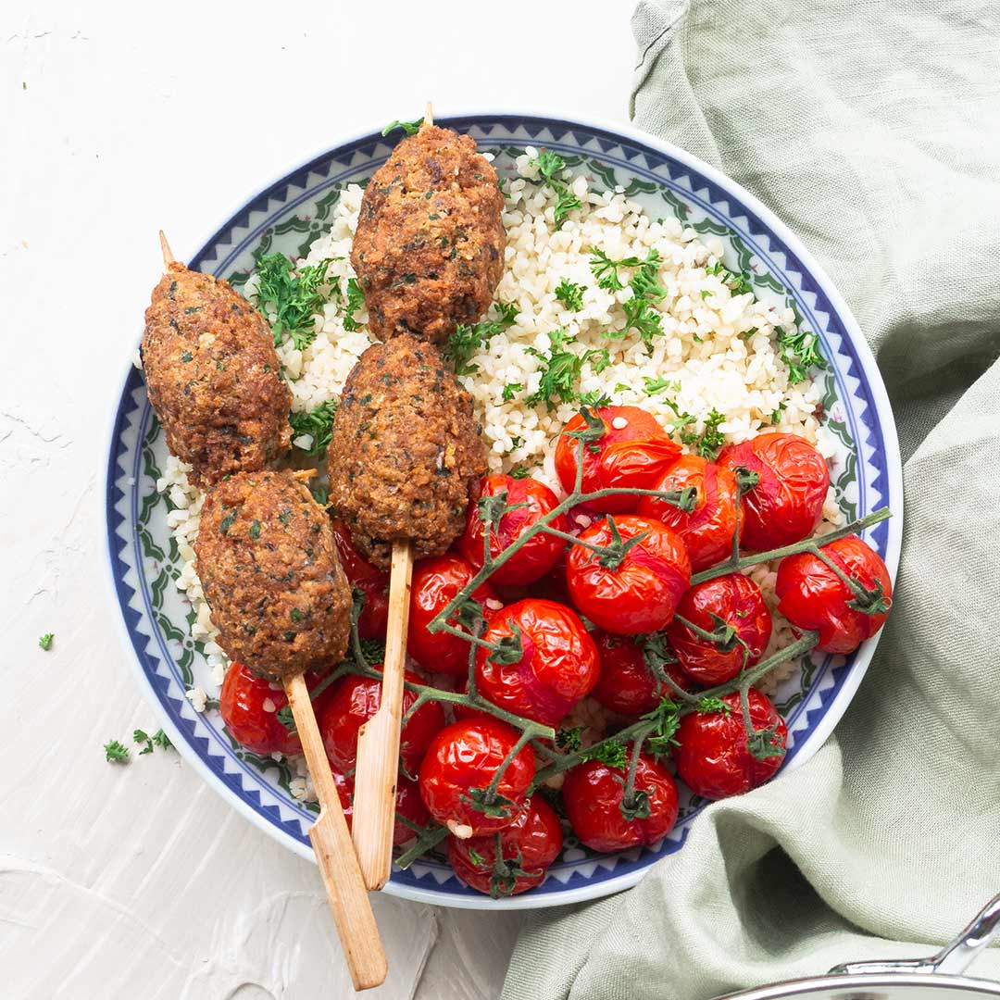

recepten

Ingredienten
- 200 gram rundergehakt
- Handvol fijngesneden platte peterselie
- 2 theelepels komijn
- 1 theelepel witte peper
- 2 theelepels zout
- 2 eetlepels paneermeel
- 1 geraspte witte ui
bereiding
- Kneed de ingrediënten voor de kofte goed met de hand door.
- Leg het gehakt minstens 20 minuten weg.
- Maak na 20 minuten met behulp van je handen platte burgers.
- Voordat je de kofte gaat grillen snijd je ongeveer 6 mini trostomaten in plakken. Nu de rode ui….
- Snijd de rode ui in dunne halve ringen.
- Kneed er 2 eetlepels sumakkruid doorheen en tenslotte roer je er een handvol peterselie door.
- Bedruppel de ui met wat olijfolie
- Nu kun je de kofte grillen. Serveer met de ui en tomaat..
- Maak het af met olijfolie en een snufje zout.
- Roer door de saus, zet het deksel op de pot en zet de stoofpot in de voorverwarmde oven. Laat minstens 1 uur tot 3 uur pruttelen in de oven. Hoe langer je de saus laat garen, hoe meer smaak de saus zal hebben.
- Haal de saus uit de oven. Vis het uitgekookte kruidentuiltje uit de pot. Serveer de pasta op een bord met een flinke portie saus. Werk de spaghetti bolognaise af met geraspte kaas..